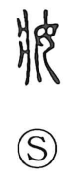

粧

Uncategorized
Kun: yosoou | On: shou
cosmetics ・ makeup ・ to adorn ・ to dress up
Explanation
A phono-semantic character. Its older form is 妝, built with a phonetic element from 壯 (notably 爿) that provides the reading shou. In bronze inscriptions a crooked auxiliary stroke is set beside the woman 女; the same stroke appears in archaic forms of 安 and 保, and is understood as the mark of special clothing worn when one is possessed by a new spirit. Thus 妝—and by extension 粧—originally evoked adorning oneself to welcome that spirit, taking on another persona. When the 米 “rice” element was added, it pointed to rice flour and other powders used in beautifying the face, and the meaning settled on cosmetic adornment.